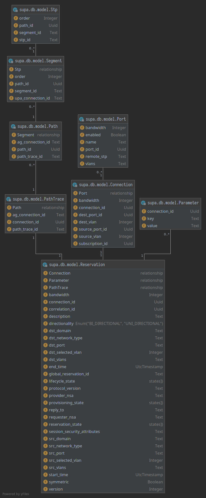
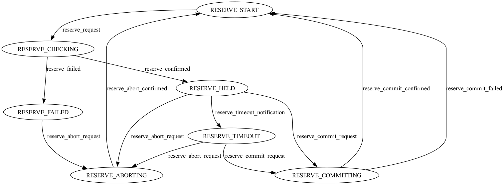
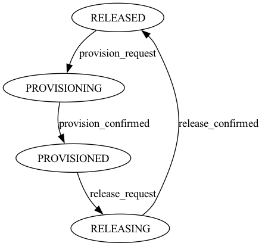
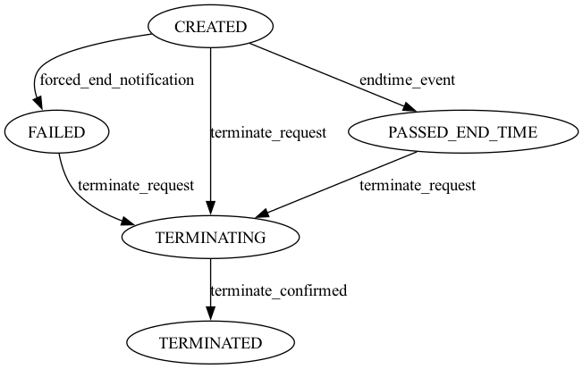
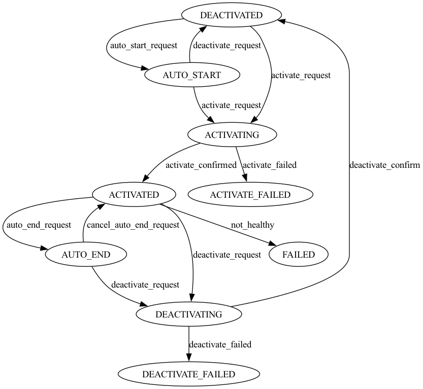

API
supa
supa.const
supa.main
supa.db.session
supa.db.model
Define the database models.
Surrogate keys versus natural keys
Looking at the model definitions you’ll find that we have used natural keys wherever possible. Though no too common these days, with the prevalent use of ORMs that automatically generate a surrogate key per model, SQLAlchemy is flexible enough to model things ‘naturally’ from a relational database point of view. This sometimes results in composite primary keys.
Foreign keys to these composite primary keys cannot be defined on a specific Column definition
or even a set of Column definitions.
Something that does work for composite primary key definitions.
Instead,
these foreign keys need to be defined using a
ForeignKeyConstraint
on the __table_args__ attribute of the DB model.
Connection IDs
Looking at example messages in the different specifications:
we see that connection IDs always seem to be formatted as UUID’s.
However, according to its definition in GWD-R-P.237,
it can be any string as long as it is unique within the context of a PA.
That is the reason that we have modelled connection IDs from other NSA’s
(ag_connection_id, upa_connection_id)
as TEXT.
Within SuPA we have decided to use UUID’s for our connection_id’s.
SQLAlchemy Model Dependency Diagram
A visual representation of how everything is wired together should help navigating the Python code a lot better.
- class supa.db.model.Uuid(*args, **kwargs)
Implement SQLAlchemy Uuid column type for SQLite databases.
This stores Python
uuid.UUIDtypes as strings (CHAR(36)) in the database. We have chosen to store theuuid.UUID.__str__()representation directly, eg. with"-"between the UUID fields, for improved readability.- process_bind_param(value: UUID | None, dialect: Dialect) str | None
Receive a bound parameter value to be converted.
Subclasses override this method to return the value that should be passed along to the underlying
TypeEngineobject, and from there to the DBAPIexecute()method.The operation could be anything desired to perform custom behavior, such as transforming or serializing data. This could also be used as a hook for validating logic.
This operation should be designed with the reverse operation in mind, which would be the process_result_value method of this class.
- Parameters:
value – Data to operate upon, of any type expected by this method in the subclass. Can be
None.dialect – the
Dialectin use.
- process_result_value(value: str | None, dialect: Dialect) UUID | None
Receive a result-row column value to be converted.
Subclasses should implement this method to operate on data fetched from the database.
Subclasses override this method to return the value that should be passed back to the application, given a value that is already processed by the underlying
TypeEngineobject, originally from the DBAPI cursor methodfetchone()or similar.The operation could be anything desired to perform custom behavior, such as transforming or serializing data. This could also be used as a hook for validating logic.
- Parameters:
value – Data to operate upon, of any type expected by this method in the subclass. Can be
None.dialect – the
Dialectin use.
This operation should be designed to be reversible by the “process_bind_param” method of this class.
- class supa.db.model.ReprBase
Custom SQLAlchemy model to provide meaningful
__str__()and__repr__()methods.Writing appropriate
__repr__and__str__methods for all your SQLAlchemy ORM models gets tedious very quickly. By using SQLAlchemy’s Runtime Inspection API this base class can easily generate these methods for you.Note
This class cannot be used as a regular Python base class due to assumptions made by
declarative_base. See Usage below instead.Usage:
Base = declarative_base(cls=ReprBase)
- exception supa.db.model.UtcTimestampException
Exception class for custom UtcTimestamp SQLAlchemy column type.
- class supa.db.model.UtcTimestamp(*args, **kwargs)
Custom SQLAlchemy column type for storing timestamps in UTC in SQLite databases.
This column type always returns timestamps with the UTC timezone. It also guards against accidentally trying to store Python naive timestamps (those without a time zone).
In the SQLite database the timestamps are stored as strings of format:
yyyy-mm-dd hh:mm:ss. UTC is always implied.- process_bind_param(value: datetime | None, dialect: Dialect) datetime | None
Receive a bound parameter value to be converted.
Subclasses override this method to return the value that should be passed along to the underlying
TypeEngineobject, and from there to the DBAPIexecute()method.The operation could be anything desired to perform custom behavior, such as transforming or serializing data. This could also be used as a hook for validating logic.
This operation should be designed with the reverse operation in mind, which would be the process_result_value method of this class.
- Parameters:
value – Data to operate upon, of any type expected by this method in the subclass. Can be
None.dialect – the
Dialectin use.
- process_result_value(value: datetime | None, dialect: Dialect) datetime | None
Receive a result-row column value to be converted.
Subclasses should implement this method to operate on data fetched from the database.
Subclasses override this method to return the value that should be passed back to the application, given a value that is already processed by the underlying
TypeEngineobject, originally from the DBAPI cursor methodfetchone()or similar.The operation could be anything desired to perform custom behavior, such as transforming or serializing data. This could also be used as a hook for validating logic.
- Parameters:
value – Data to operate upon, of any type expected by this method in the subclass. Can be
None.dialect – the
Dialectin use.
This operation should be designed to be reversible by the “process_bind_param” method of this class.
- class supa.db.model.Reservation(**kwargs)
DB mapping for registering NSI reservations.
- src_stp(selected: bool = False) Stp
Return
STPinstance for src data.Depending on where we are in the reservation process, we need to deal with a requested VLAN(s)(ranges), or a selected VLAN. The
selectedparameter determines which of the two will be used for thelabelsargument to theStpobject.- Parameters:
selected – if True, use ‘selected VLAN` instead of requested VLAN(s)(ranges)
- Returns:
Stpobject
- dst_stp(selected: bool = False) Stp
Return
STPinstance for dst data.Depending on where we are in the reservation process, we need to deal with a requested VLAN(s)(ranges), or a selected VLAN. The
selectedparameter determines which of the two will be used for thelabelsargument to theStpobject.- Parameters:
selected – if True, use ‘selected VLAN` instead of requested VLAN(s)(ranges)
- Returns:
Stpobject
- class supa.db.model.PathTrace(**kwargs)
DB mapping for PathTraces.
- class supa.db.model.Path(**kwargs)
DB mapping for Paths.
- class supa.db.model.Segment(**kwargs)
DB mapping for Segment.
- class supa.db.model.Stp(**kwargs)
DB Mapping for STP.
- class supa.db.model.Parameter(**kwargs)
DB mapping for PointToPointService Parameters.
- class supa.db.model.Topology(**kwargs)
DB mapping for STP’s and ports in the topology from the NRM.
- class supa.db.model.Connection(**kwargs)
DB mapping for registering connections to be build/built.
It stores references to the actual STP’s used in the connection as listed in :class`Topology` and the
circuit_idof the circuit in the NRM.
- supa.db.model.connection_to_dict(connection: Connection) Dict[str, Any]
Create a dict from a Connection.
A convenience function to create a dict that can be used as parameter list to all backend methods.
- class supa.db.model.Notification(**kwargs)
DB mapping for registering notifications against a connection ID.
Store the notification for a connection ID serialized to string together with a linearly increasing identifier that can be used for ordering notifications in the context of the connection ID.
- class supa.db.model.Result(**kwargs)
DB mapping for registering results against a connection ID.
Store the async result to a provider request serialized to string together with a linearly increasing identifier that can be used for ordering results in the context of the connection ID. Results of requests from a RA to a PA are stored so they can be retrieved later in case only synchronous communication is possible between the RA and PA.
supa.job.reserve
supa.job.provision
supa.job.lifecycle
supa.job.query
supa.job.dataplane
supa.connection.fsm
Define the three NSI Connection Service state machines.
The NSI Connection Service defines three state machines that, together with the message processing functions (=coordinator functions in NSI parlance), model the behaviour of the protocol.
They are:
ReservationStateMachine(RSM)ProvisionStateMachine(PSM)LifecycleStateMachine(LSM)
The state machines explicitly regulate the sequence in which messages are processed. The CS messages are each assigned to one of the three state machines: RSM, PSM and LSM. When the first reserve request for a new Connection is received, the function processing the reserve requests MUST coordinate the creation of the RSM, PSM and LSM state machines for that specific connection.
The RSM and LSM MUST be instantiated as soon as the first Connection request is received.
The PSM MUST be instantiated as soon as the first version of the reservation is committed.
- class supa.connection.fsm.SuPAStateMachine(*args: Any, **kwargs: Any)
Add logging capabilities to StateMachine.
- on_enter_state(state: State) None
Statemachine will call this function on every state transition.
- class supa.connection.fsm.ReservationStateMachine(*args: Any, **kwargs: Any)
Reservation State Machine.

- class supa.connection.fsm.ProvisionStateMachine(*args: Any, **kwargs: Any)
Provision State Machine.

- class supa.connection.fsm.LifecycleStateMachine(*args: Any, **kwargs: Any)
Lifecycle State Machine.

- class supa.connection.fsm.DataPlaneStateMachine(*args: Any, **kwargs: Any)
DataPlane State Machine.

supa.connection.error
Predefined NSI errors.
The errors are not defined in the NSI Connection Service v2.1 specification. Instead there is a separate document Error Handling in NSI CS 2.1 that specifies these errors.
Not all errors might be applicable to SuPA’s operation, it being a Provider Agent, though all have been included for reference.
Name |
|
|
|
|---|---|---|---|
GenericMessagePayLoadError |
00100 |
GENERIC_MESSAGE_PAYLOAD_ERROR |
Illegal message payload. |
MissingParameter |
00101 |
MISSING_PARAMETER |
Invalid or missing parameter. |
UnsupportedParameter |
00102 |
UNSUPPORTED_PARAMETER |
Provided parameter contains an unsupported value that MUST be processed. |
NotImplemented |
00103 |
NOT_IMPLEMENTED |
Requested feature has not been implemented. |
VersionNotSupported |
00104 |
VERSION_NOT_SUPPORTED |
The protocol version requested is not supported. |
GenericConnectionError |
00200 |
GENERIC_CONNECTION_ERROR |
A connection error has occurred. |
InvalidTransition |
00201 |
INVALID_TRANSITION |
Connection state machine is in invalid state for received message. |
ReservationNonExistent |
00203 |
RESERVATION_NONEXISTENT |
Schedule does not exist for connectionId. |
GenericSecurityError |
00300 |
GENERIC_SECURITY_ERROR |
A security error has occurred. |
Unauthorized |
00302 |
UNAUTHORIZED |
Insufficient authorization to perform requested operation. |
GenericMetadataError |
00400 |
GENERIC_METADATA_ERROR |
A topology or generic path computation error has occurred. |
DomainLookupError |
00405 |
DOMAIN_LOOKUP_ERROR |
Unknown network for requested resource. |
NsaLookupError |
00406 |
NSA_LOOKUP_ERROR |
Cannot map networkId to service interface. |
NoServiceplanePathFound |
00407 |
NO_SERVICEPLANE_PATH_FOUND |
No service plane path for selected connection segments. |
GenericInternalError |
00500 |
GENERIC_INTERNAL_ERROR |
An internal error has caused a message processing failure. |
ChildSegmentError |
00502 |
CHILD_SEGMENT_ERROR |
Child connection segment error is present. |
MessageDeliveryError |
00503 |
MESSAGE_DELIVERY_ERROR |
Failed message delivery to peer NSA. |
GenericResourceUnavailable |
00600 |
GENERIC_RESOURCE_UNAVAILABLE |
A requested resource(s) is not available. |
GenericServiceError |
00700 |
GENERIC_SERVICE_ERROR |
A service specific error has occurred. |
UnknownStp |
00701 |
UNKNOWN_STP |
Could not find STP in topology database. |
LabelSwappingNotSupported |
00703 |
LABEL_SWAPPING_NOT_SUPPORTED |
Label swapping not supported for requested path. |
StpUnavailable |
00704 |
STP_UNAVALABLE |
Specified STP already in use. |
CapacityUnavailable |
00705 |
CAPACITY_UNAVAILABLE |
Insufficient capacity available for reservation. |
DirectionalityMismatch |
00706 |
DIRECTIONALITY_MISMATCH |
Directionality of specified STP does not match request directionality. |
InvalidEroMember |
00707 |
INVALID_ERO_MEMBER |
Invalid ERO member detected. |
UnknownLabelType |
00708 |
UNKNOWN_LABEL_TYPE |
Specified STP contains an unknown label type. |
InvalidLabelFormat |
00709 |
INVALID_LABEL_FORMAT |
Specified STP contains an invalid label. |
NoTransportplanePathFound |
00710 |
NO_TRANSPORTPLANE_PATH_FOUND |
Path computation failed to resolve route for reservation. |
GenericRmError |
00800 |
GENERIC_RM_ERROR |
An internal (N)RM error has caused a message processing failure. |
- class supa.connection.error.Variable(value)
Variable to namespace mapping.
This is a peculiarity of the original SOAP underpinning of the NSI protocol. Even though all that is XML has largely been abstracted away from us by using the Protobuf version of NSI, we still need to track certain things to facilitate a proper translation between the two protocol versions. The namespace associated with each variable (in the ServiceException`) is such a thing.
- class supa.connection.error.NsiError(error_id: str, error_code: str, descriptive_text: str)
Predefined NSI errors.
Reporting of these errors happens as part of the
ServiceExceptionmessage.The
textfield of theServiceExceptionshould be made up of three parts:error_code: descriptive_text [extra information]
- error_id: str
An unique ID for the error.
The
error_idcan optionally be included in theServiceException.
- error_code: str
Human readable name of the error.
The
error_codeshould always be included in theServiceException.
- descriptive_text: str
Descriptive text explaining the error.
The
textshould always be included in theServiceException.
supa.connection.requester
supa.connection.provider.server
supa.util.bandwidth
- supa.util.bandwidth.format_bandwidth(mbits: int, *, short: bool = False) str
Format bandwidth with unit designator (eg, Mbit/s or M).
It supports units up to and including Petabit.
If it cannot convert the number to an integral one, it will allow for 1 decimal.
Negative bandwidths will always return 0 Mbit/s or 0 M
Examples:
>>> format_bandwidth(40) '40 Mbit/s' >>> format_bandwidth(40, short=True) '40M' >>> format_bandwidth(10000) '10 Gbit/s' >>> format_bandwidth(10000, short=True) '10G' >>> format_bandwidth(1300) '1.3 Gbit/s' >>> format_bandwidth(0) '0 Mbit/s' >>> format_bandwidth(-100) '0 Mbit/s'
- Parameters:
mbits – number of mbits
short – boolean indicating whether to use ‘M’, ‘G’ or ‘Mbit/s’ or ‘Gbit/s’, etc
- Returns:
Formatted number with unit designator.
supa.util.converter
supa.util.timestamp
Assorted helper functions and datastructures for dealing with timestamps.
- supa.util.timestamp.EPOCH = datetime.datetime(1970, 1, 1, 0, 0, tzinfo=datetime.timezone.utc)
The epoch as an aware datetime object.
When using protobuf you can not distinguish between no value specified and the default value. For Protobuf
Timestampfields the default value is 0 seconds since the epoch. However we deal withdatetimeobjects exclusively. So we need the epoch as adatetimeobject.
- supa.util.timestamp.NO_END_DATE = datetime.datetime(2108, 1, 1, 0, 0, tzinfo=datetime.timezone.utc)
A sufficiently far into the future date to be considered no end date
Date/time calculations are easier when we have an actual date to work with. Hence, to model “no end date” we need to come up with a date that is far enough into the future to be considered “forever”. Randomly picking a large number for the year of such a date feels inappropriate; we can be a lot more geeky about it than that.
So, a somewhat geeky candidate is the first prime number after (the year) 2020. That happens to be 2081; 61 years into the future. Although we have high hopes for SuPA, we don’t expect it to last that long. As such, it does meet the criterion to be considered “forever”. But the fact that it starts with “20xx might not make it immediately obvious that this is the “no end date” date.
If we shuffle a bit with the digits of that prime number we get 2108. A date that starts with “21xx” should make it sufficiently different from all the other real end dates. On top of that it is a somewhat a geeky date as well. That is, if you like (military) SciFi and have read The Frontlines Series by Marko Kloos, which is set in the year 2108. All criteria have now been met.
- supa.util.timestamp.current_timestamp() datetime
Return an “aware” UTC timestamp for “now”.
- Returns:
An “aware” UTC timestamp.
- supa.util.timestamp.as_utc_timestamp(timestamp: Timestamp) datetime
Convert Protobuf timestamp to an UTC datetime object.
- Parameters:
timestamp – Protobuf timestamp
- Returns:
“aware” UTC datetime object
- supa.util.timestamp.is_specified(timestamp: datetime) bool
Test to see if the timestamp is specified.
In the context of Protobuf Timestamps we consider a timestamp (previously converted to
datetime) to be “specified” if it is larger than the default value for Timestamps. That default value beingEPOCH.- Parameters:
timestamp – timestamp under test.
- Returns:
True if
timestamp> EPOC
supa.util.nsi
NSI specific functions and datastructures.
- supa.util.nsi.URN_PREFIX = 'urn:ogf:network'
URN namespace for Network Resources.
- class supa.util.nsi.Stp(domain: str, topology: str, stp_id: str, labels: str | None)
Dataclass for representing the constituent parts of an STP identifier.
- property vlan_ranges: VlanRanges
Return the vlan ranges specified on the STP.
A single If no vlan ranges where specified on the STP, this will return an “empty”
VlanRangesobject. Such an object will evaluate to False in a boolean context.- Returns:
A
VlanRangesobject.
supa.util.vlan
VlanRanges object for easy VLAN ranges processing.
- class supa.util.vlan.VlanRanges(val: str | int | Iterable[int] | Sequence[Sequence[int]] | None = None)
Represent VLAN ranges.
This class is quite liberal in what it accepts as valid VLAN ranges. All of:
overlapping ranges
ranges with start value > stop value
ranges with extraneous whitespace
are all accepted and normalized to a canonical value.
Examples:
# These are all equivalent VlanRanges("4,10-12,11-14") VlanRanges("4, ,11 - 14, 10- 12") VlanRanges("4,10-14") VlanRanges([4, 10, 11, 12, 13, 14]) VlanRanges([[4], [10,12], [11,14]]) VlanRanges([(4, 4), (10, 14)])
Note
This class support most
setoperations.- to_list_of_tuples() List[Tuple[int, int]]
Construct list of tuples representing the VLAN ranges.
Example:
>>> VlanRanges("10 - 12, 8").to_list_of_tuples() [(8, 8), (10, 12)]
- Returns:
The VLAN ranges as contained in this object.
- __contains__(key: object) bool
Membership test.
- __iter__() Iterator[int]
Return an iterator that iterates over all the VLANs.
- __len__() int
Return the number of VLANs represented by this VlanRanges object.
- Returns:
Number of VLAN’s
- __str__() str
Create an as compact as possible string representation of VLAN ranges.
Example:
>>> str(VlanRanges("1,2,3,4,5-10,8")) '1-10'
- __repr__() str
Create string representation of the VLAN ranges that can be used as a valid Python expression.
Example:
>>> repr(VlanRanges("1,2,3,4,5-10,8")) 'VlanRanges([(1, 10)])'
- __eq__(o: object) bool
Test for equality.
- __hash__() int
Calculate hash value.
- __sub__(other: int | AbstractSet[Any]) VlanRanges
Remove VLANs from left operand that are in the right operand.
Examples:
>>> VlanRanges("1-10") - VlanRanges("5-8") VlanRanges([(1, 4), (9, 10)])
- __and__(other: AbstractSet[Any]) VlanRanges
Intersection of two VlanRanges objects.
Example:
>>> VlanRanges("10-20") & VlanRanges("20-30") VlanRanges([(20, 20)])
- __or__(other: AbstractSet[Any]) VlanRanges
Union of two VlanRanges objects.
Example:
>>> VlanRanges("10-20") | VlanRanges("20-30") VlanRanges([(10, 30)])
- __xor__(other: AbstractSet[Any]) VlanRanges
Symmetric difference of two VlanRanges objects.
Example:
>>> VlanRanges("10-20") ^ VlanRanges("20-30") VlanRanges([(10, 19), (21, 30)])
- isdisjoint(other: Iterable[Any]) bool
Return True if the VlanRanges object has no VLANs in common with the other VlanRanges object.
- union(*others: AbstractSet[Any]) VlanRanges
Union of two or more VlanRanges objects.
This does work with sets as well.
Example:
>>> VlanRanges("10-20").union(VlanRanges("20-30"), {1,2,3,4}) VlanRanges([(1, 4), (10, 30)])
supa.util.functional
Assorted helper functions for representing the same data in different ways.
- supa.util.functional.expand_ranges(ranges: Sequence[Sequence[int]], inclusive: bool = False) List[int]
Expand sequence of range definitions into sorted and deduplicated list of individual values.
A range definition is either a:
one element sequence -> an individual value.
two element sequence -> a range of values (either inclusive or exclusive).
>>> expand_ranges([[1], [2], [10, 12]]) [1, 2, 10, 11] >>> expand_ranges([[1], [2], [10, 12]], inclusive=True) [1, 2, 10, 11, 12] >>> expand_ranges([[]]) Traceback (most recent call last): ... ValueError: Expected 1 or 2 element list for range definition. Got f0 element list instead.
Resulting list is sorted:
>>> expand_ranges([[100], [1, 4]], inclusive=True) [1, 2, 3, 4, 100]
- Parameters:
ranges – sequence of range definitions
inclusive – are the stop values of the range definition inclusive or exclusive.
- Returns:
Sorted deduplicated list of individual values.
- Raises:
ValueError – if range definition is not a one or two element sequence.
- supa.util.functional.to_ranges(i: Iterable[int]) Iterable[range]
Convert a sorted iterable of ints to an iterable of range objects.
Note
The iterable passed in should be sorted and not contain duplicate elements.
- Examples::
>>> list(to_ranges([2, 3, 4, 5, 7, 8, 9, 45, 46, 47, 49, 51, 53, 54, 55, 56, 57, 58, 59, 60, 61])) [range(2, 6), range(7, 10), range(45, 48), range(49, 50), range(51, 52), range(53, 62)]
- Parameters:
i – sorted iterable
- Yields:
range object for each consecutive set of integers
supa.util.find
Utilities to find files and directories.
- supa.util.find.find_file(pathname: str | Path) Path
Find file ‘pathname’ along sys.path.
- supa.util.find.find_directory(pathname: str | Path) Path
Find directory ‘pathname’ along sys.path.
supa.util.type
Handy types to keep things sane.
- class supa.util.type.ResultType(value)
Capture the set of valid results as returned by QueryResult.
- class supa.util.type.NotificationType(value)
Capture the set of valid notifications as returned by QueryNotification.